Dish photo credits
Monsoon Café & Kitchen is a made-up restaurant on a sample menu. The dish photos are illustrative stand-ins from Wikimedia Commons, used under the licences below and resized to thumbnails. They are not photos of this restaurant’s food. Click a title for the original file and full licence.
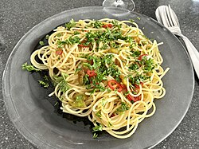
Aglio olio pastaSpaghetti aglio e olio KB.jpg by Bairuilong, CC BY-SA 4.0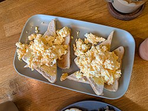
Akuri on toastScrambled egg on toast - Loro's Cafe 2025-08-13.jpg by Andy Li, CC0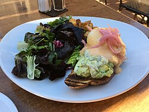
Avocado toastAvocado toast at the girl & the fig - Sarah Stierch.jpg by Sarah Stierch, CC BY 4.0 Banana walnut cake (slice)Julia's Banana and Blueberry Cake with walnuts.jpg by Alpha, CC BY-SA 2.0
Banana walnut cake (slice)Julia's Banana and Blueberry Cake with walnuts.jpg by Alpha, CC BY-SA 2.0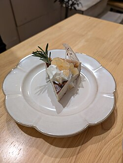
Basque burnt cheesecakeChestnut Basque Cheesecake - MOGUMOGU 2024-11-02.jpg by Andy Li, CC0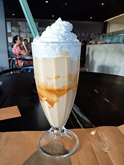
Biscoff shakeSalted Caramel Milkshake.jpg by Xadai, CC0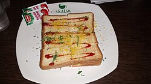
Bombay masala toastieBombay Sandwich.jpg by Princejain17, CC BY-SA 4.0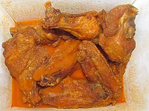
Buffalo chicken wingsBuffalo Burgers Buffalo Chicken Wings (36082467922).jpg by Willis Lam, CC BY-SA 2.0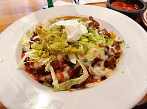
Burrito bowlSteak burrito bowl at La Casa Restaurant in Sonoma, California - Sarah Stierch 03.jpg by Missvain, CC BY 4.0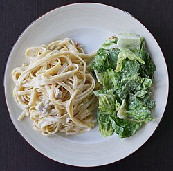
Butter cheese pastaChicken fettuccine alfredo.JPG by Dllu, CC BY-SA 4.0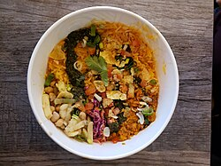
Butter chicken rice bowlButter chicken rice bowl - chaiiwala 2024-02-10.jpg by Andy Li, CC0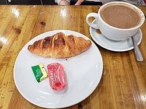
Butter croissantCroissant with jam and butter - Little Miss Piggies.jpg by Andy Li, CC0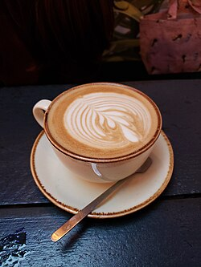
Café latteLatte - Garden Café Brighton 2023-12-30.jpg by Andy Li, CC0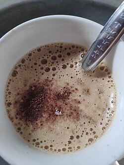
CappuccinoCappuccino 8.jpg by Gaurav Dhwaj Khadka, CC BY-SA 4.0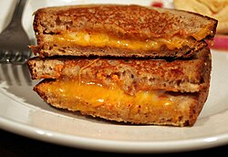
Cheese corn toastieGrilled cheese sandwich.jpg by Maggie Hoffman, CC BY 2.0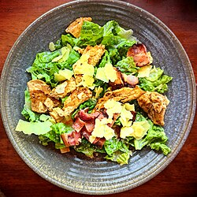
Chicken Caesar saladChicken Caesar salad - Auckland, New Zealand.jpg by Daderot, CC0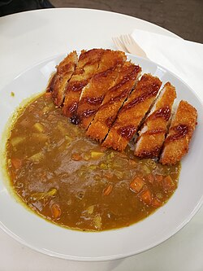
Chicken katsu curryChicken katsu curry rice - Korpan.jpg by Andy Li, CC0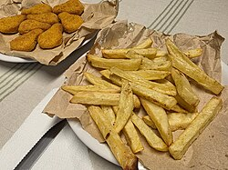
Chicken nuggets & friesPapas fritas caseras y nuggets de pollo en platos con papel madera.jpg by Horacio Cambeiro, CC BY-SA 3.0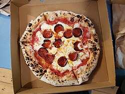
Chicken pepperoni pizzaPepperoni pizza- boella co. 2024-02-17.jpg by Andy Li, CC0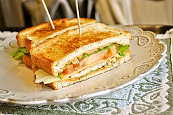
Chicken tikka sandwichChicken sandwich.jpg by Tmannya, CC BY-SA 3.0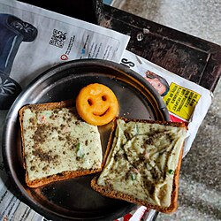
Chilli cheese toastChilli chesse toast.jpg by Kundavai Pirati, CC BY-SA 4.0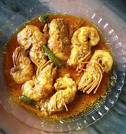
Chilli garlic prawnsGARLIC CHILLI PRAWN.jpg by Duttaanu, CC BY-SA 4.0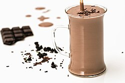
Chocolate milkChocolate milk.JPG by stevepb, CC0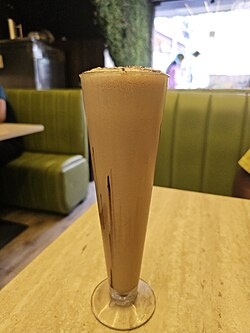
Classic cold coffeeCold Coffee 2.jpg by Gannu03, CC BY-SA 4.0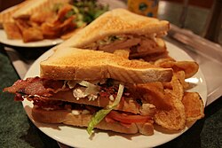
Club sandwichClub-sandwich.jpg by Memm, CC BY 3.0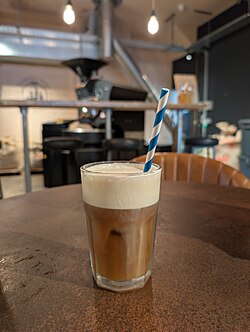
Cold brewMaple Cream Cold Brew - Trading Post Coffee Roasters 2026-07-16.jpg by Andy Li, CC0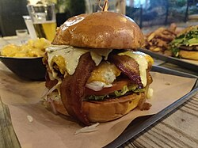
Crispy chicken burgerFried chicken burger .jpg by Kurt Kaiser, CC0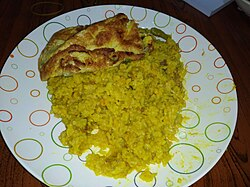
Dal khichdiKhichri with omelette.jpg by Dr. Asif Md. Rezaur Rahman, CC BY-SA 4.0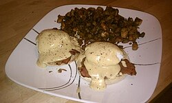
Eggs BenedictEggs Benedict2.jpg by Xetrin, CC BY-SA 3.0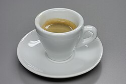
EspressoEspresso BW 1.jpg by Berthold Werner, Public domain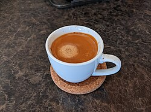
Extra espresso shotEspresso shot.jpg by massage-techniques, CC BY-SA 2.0 Filter kaapiIndian filter coffee in Dabarah.jpg by Unknown author, CC BY-SA 3.0
Filter kaapiIndian filter coffee in Dabarah.jpg by Unknown author, CC BY-SA 3.0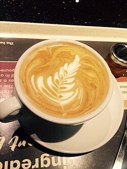
Flat whiteFlat white coffee with pretty feather pattern.jpg by GeorgeMichaelFarewell, CC BY-SA 4.0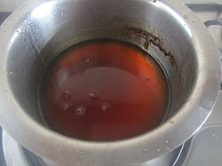
Flavour syrupCaramel Syrup.jpg by Divya Kudua, CC BY 2.0 Fresh lime sodaFresh Lime.JPG by Siddhantsahni28, CC BY-SA 4.0
Fresh lime sodaFresh Lime.JPG by Siddhantsahni28, CC BY-SA 4.0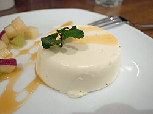
Gulkand panna cottaPanna Cotta with cream and garnish.jpg by hiro, CC BY-SA 2.0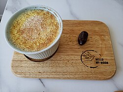
Haldi doodh (turmeric latte)Golden turmeric latte - Hello My Moon 2024-04-07.jpg by Andy Li, CC0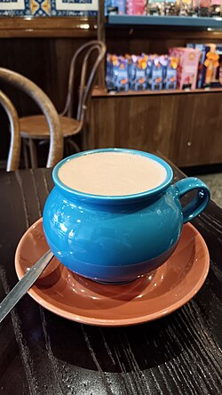
Hot chocolateDark Hot Chocolate, San Churro Leederville, 2026 (01).jpg by Bahnfrend, CC BY-SA 4.0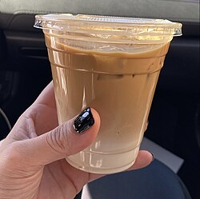
Iced Spanish latteIced Latte.jpg by Dredre Lovee, CC BY-SA 4.0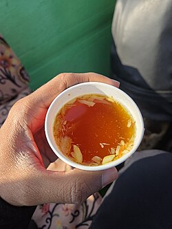
Kashmiri kahwaKashmiri Kahwa (28963).jpg by Gannu03, CC BY-SA 4.0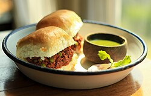
Keema pavKeema Pao with Hari Chutney.jpg by Vidurmayor, CC BY-SA 4.0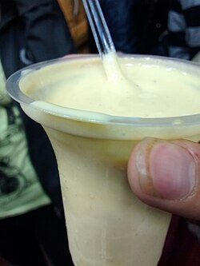
Kesar shrikhandKesar Shrikhand.jpg by Pullak Parag Khetan, CC BY-SA 4.0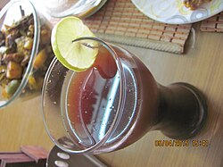
Kokum sherbetKokum imli shorbot.JPG by Parochb, CC BY-SA 4.0 Kothimbir vadiKothimbir vadi.JPG by सदस्य:वि.नरसीकर, CC BY-SA 4.0
Kothimbir vadiKothimbir vadi.JPG by सदस्य:वि.नरसीकर, CC BY-SA 4.0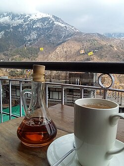
Lemon ginger honey teaLemon and ginger tea with honey, Illiterati cafe, Dharamshala, Himachal Pradesh.jpg by Bhuvana Meenakshi, CC BY-SA 4.0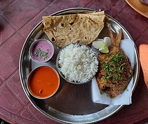
Malvani fish thaliMalvani Fish Thali - malvan katta, Malvan - Maharashtra - 006.jpg by Bhuppigraphy, CC BY-SA 4.0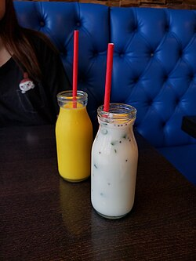
Mango lassi (in season)Mango Lassi and Butter Milk - Vel South Indian Kitchen + Bar.jpg by Andy Li, CC0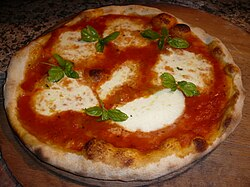
Margherita pizzaMargherita Originale.JPG by Mario56, CC BY-SA 3.0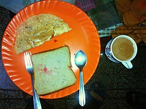
Masala omelette & toastBreakfast special.jpg by Gagan Deep Singh, CC BY-SA 4.0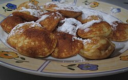
Mini pancakes with chocolate saucePoffertjes 001.jpg by Unknown author, Public domain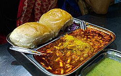
Misal pav*Misal Pav*.jpg by Ishanya 1507, CC BY-SA 4.0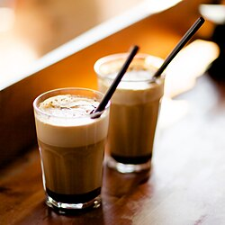
MochaMocha coffee.jpg by Ernst Vikne, CC BY-SA 2.0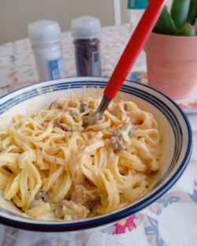
Mushroom alfredoFettucine alfredo with mushrooms.png by Elvenjewel777, CC BY-SA 4.0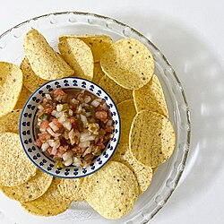
Nachos with salsaHomemade salsa with nachos 1.jpg by 에그란, CC BY 4.0- Nutella shakeChocolate milkshake.jpg by Hegde Neha, CC BY-SA 4.0
- Oat or almond milk004-almondmilk.jpg by Kjokkenutstyr, CC BY-SA 4.0
- Pancake stackPancake stack 3.jpg by Shisma, CC BY 4.0
- Peach iced teaPeach iced tea with orange slices.jpg by Baoothersks, CC BY-SA 4.0
- Penne arrabbiataPenne Arrabbiata.jpg by Petar Milošević, CC BY-SA 4.0
- Peri-peri friesFries (Peri Peri) 2026.jpg by Gpkp, CC BY-SA 4.0
- Pesto paneer paniniPanini (Mozzarella, Pesto & Tomato) - Dyke Road Park Cafe.jpg by Andy Li, CC0
- Poha, Monsoon stylePoha with tomato sause.jpg by Mrsagar105, CC BY-SA 4.0
- Quinoa & roasted pumpkin saladQuinoa Salad (5045982815).jpg by Geoff Peters from Vancouver, BC, Canada, CC BY 2.0
- Raw mango & peanut saladPeanut Salad.jpg by Bhavika1990, CC BY-SA 4.0
- Sabudana vadaSabudana Vada.jpg by Yakshitha, CC BY-SA 4.0
- ShakshukaShakshuka by Calliopejen1.jpg by Calliopejen1, CC BY-SA 3.0
- Sizzling brownieSizzling brownie (2065099914).jpg by Sankarshan Mukhopadhyay from Pune, India, CC BY-SA 2.0
- Smashed veg burgerThe ultimate veggie burger.jpg by Sarah Afshar, CC BY-SA 4.0
- Sourdough toast & butterVg Garlic Mushrooms on toashed sourdough - T @ The Dials 2024-02-26.jpg by Andy Li, CC0
- Tandoori paneer pizzaTandoori Paneer Pizza from India.jpg by Barthateslisa, CC BY-SA 4.0
- Tender coconut waterTender coconut water 02.jpg by Vis M, CC BY-SA 4.0
- Thai green curry bowlThai Green Curry with Rice.jpg by Kenamparo, CC BY-SA 4.0
- TiramisuDolce Tiramisù monoporzione.jpg by Anna.Massini, CC BY 4.0
- Two eggs, any styleMilano's Café egg on toast Russell Street Stroud Gloucestershire England.jpg by Acabashi, CC BY-SA 4.0
 Watermelon & feta saladWatermelon & Feta Salad.jpg by Shoshanah, CC BY 2.0
Watermelon & feta saladWatermelon & Feta Salad.jpg by Shoshanah, CC BY 2.0- Watermelon mint coolerWatermelon juice in glass.jpg by Brindhashanmugam312, CC BY-SA 4.0


.jpg){kind=link}


.jpg){kind=link}

.jpg){kind=link}


_2026.jpg){kind=link}
_-_Dyke_Road_Park_Cafe.jpg){kind=link}

.jpg){kind=link}


.jpg){kind=link}